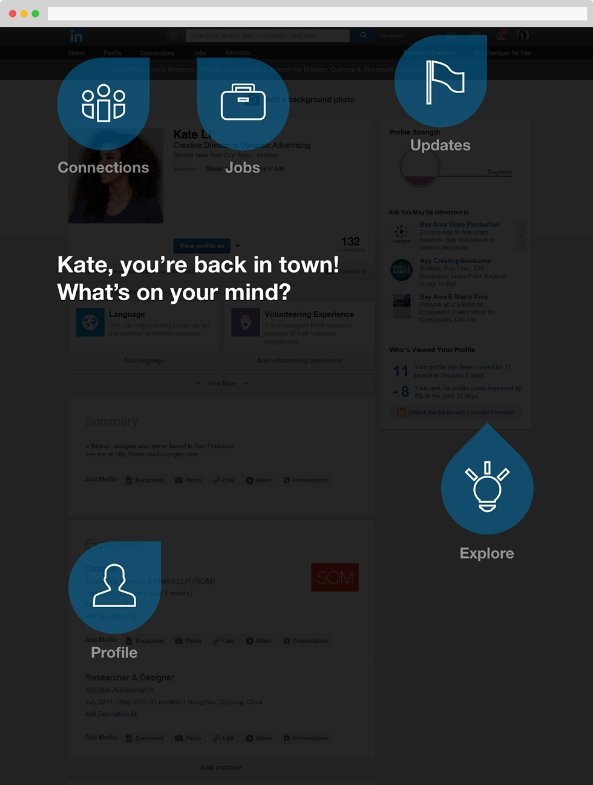

LinkedIn Welcome-Back Portal
Overview
This is a conceptual project for LinkedIn. Its goal is to tackle the problem of dormant-user returning and information-overloading of the existing LinkedIn's web version.
I worked as the sole UX researcher and designer on this project. My jobs covered user data collecting, user case studies, problem framing, user scenario analysis, ideation, UI/UX design, and fast prototyping. All wireframes, mockups and prototypes showed here were designed, coded and produced by me.
User Problem
LinkedIn use the power of professional networking and profile data to connect individuals with relevant opportunities for professional growth, development, and career opportunities. There is a certain portion of LinkedIn members are dormant users, and they usually return to LinkedIn after 3+ months of inactivity. The design challenge is to give a friendly "welcome back" experience for dormant users.
Design Goal
The design goals were formulated through three steps. The first is to understand why dormant user returns and what are the drives behind it. The second is to accommodate all levels of familiarity from different dormant users. The third is to help user to find and engage with the specific function quickly and effortlessly. Overall the design is not to add more information to the already-overwhelmed LinkedIn page, but to make it more friendly and easier to navigate.
A new Welcom-Back portal.
Integrated with the old LinkedIn.
Integrated with the old LinkedIn.
The overall UI is designer as a lightweight layer on top of existing information-heavy LinkedIn's page. And navigating portal icons are positioned and designed to connect Linked's mostly used functions and provide updates during user's dormant period.
User Interaction Flow
The user flow was designed to firstly identify a dormant user, then offer a fast, clear and extremely simple way to enable both skipping and engaging actions.
User Scenarios & Interactions
The user interactions is designed based on multiple user scenarios, addressing different search and engagements by different dormant users.
Thinking Process
Following the user-centered deducing process, the design is unfolded through a series of key findings and problem framing.
A Live Prototype
I coded up a live prototype to show the user interactions and web feedbacks. Try hovering and clicking on different blue icons. Make sure your browser's window width is bigger than 960px.
1. Mouse hover on blue icons to see system feedbacks.
2. Mouse click on blue icons to direct to that page.
